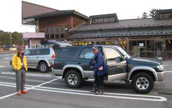
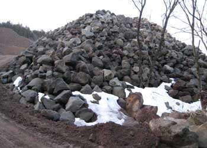

|
|
|||||||||||||||||||||||||||
|
|
|||||||||||||||||||||||||||
|
２００８年 春の全国集会 （鳥海山） |
| 開 催 日 | ２００８年４月４〜６日 | |||
| リーダー | 高橋 毅、日出平 洋太郎、 地元ガイドの皆さん、０７年幹事団 |
|||
| 報 告 者 | 西田進、小林義亮、 高井延幸、岡田尚武 |
|||
| 参加者数 | ６２名（会員５０名、ゲスト１２名) | |||
| 今年のアルパインスキークラブの春の全国集会は、山形県遊佐町の 「四季の森 しらい自然館」を宿舎にして、４月４日は希望者のみ前泊、５日は鳥海山域の稲倉岳往復、６日は鳥海湖往復というダブル企画が行なわれた。 参加者６２名という空前の大人気であった。 |
| ４月４日 （前夜泊） |
| ４月４日、希望者３７名は、宿舎の「四季の森 しらい自然館」に前泊した。 図らずも楽しい前夜祭となった。 |
 |
| 夕刻から続々「四季の森 しらい自然館」に詰めかける |
| ３７名の前泊者の夕食、いわば前夜祭 |
| A | A |  |
||
| 夕食後の飲み会 ２台のペレット・ストーブが暖かい |
ペレット・ストーブはクロマツペレットを燃やす バイオマスであるペレットを燃やすことは、植物が吸収したCO2を大気に戻すので、カーボンニュートラルと呼ばれる優れものだが、コストが高いのが難点である。 |
|||
| ４月５日 （稲倉山スキー） |
| ４月５日は５６名が参加して、稲倉岳登頂を目指す。 鳥海山域の北面に位置する稲倉岳は、宿舎から登山口まで車で片道約１時間かかる。 なが〜い一日となった。 |
| A |  | |
| 早朝５：００に自然館を出発 |
道の駅「鳥海」で夜行組と合流 稲倉岳登山口の駐車場が狭いので、一部の車は、ここに駐車させて、相乗りで登山口に向かう |
| ５６名が次々に出発 ２週間前の下見のときはシールを付けて歩いたのだが--- |
| A | ||
| マンサクの花の下をシール登高 | ||
| 樹林帯を抜けると、われわれが「展望台」と名付けた台地に到着 |
 |
| ちょうどその時、稲倉岳から滑降してきた仲間と合流 竹腰さんがテレマークを決める |
| 合流した仲間で記念写真 この時間は上はガスが出ていた。 この後天候が回復し稲倉岳山頂に登頂した人は１２名 |
| A | ||
| 急速に進む雪融け | フキのトウ |
| GPS軌跡（データ取得：小林さん） |
| 麓で稲倉岳がきれいに見えた |
| 今日は雨こそ降らなかったが、天候に恵まれず稲倉岳に登頂できた人は少なかった。 明日は天気がよさそうだ。 |
| ４月５日 （懇親会） |
| ４月５日の夜は、６０名参加の懇親会である。 鳥海山にかける情熱を話された池田さんのご講演に始まり、２時間の制限時間はあっという間に過ぎた。 |
| 恒例のの大懇親会 |
| A | A | A | ||||
| 司会の中川さん | 代表幹事の日出平さん | クラブ代表の宮本さん | 鳥海山1000回登頂の池田さん |
| 小松原さんの音頭で乾杯 |
| A | A | A | ||||
| 総隊長の高橋さん |
ガイドして下さった吉川さん |
ガイドして下さった石黒さん |
お忙しい遊佐町長の 小野寺さんも来て下さった |
| ４月６日 （万助小屋〜鳥海湖スキー） |
| ４月６日、今日は５６名が参加して、鳥海山南西面の万助小屋から稜線に出て 鳥海湖を往復するツアーが行われた。 天候に恵まれて豪快な春スキーを満喫できた。 |
| 今朝も５：００に自然館を出発 |
| A |  | |
| 登山口の採石場に駐車させてもらう 鳥海山は約2600年前の噴火で山体崩壊があったという。 ここでは、いい火山岩が採石できるらしい。 |
||
| A | ||
| 登山口で６班に分かれてブリーフィング | ２週間前の下見のときは、シールで登れたが--- |
| ブナ林の中の気持ちのいいシール登高 ブロードバンドの方は、 上の画像をクリックしてビデオをご覧下さい |
| 幾筋かの沢と尾根を超えながらシール登高する |
| 鳥海山の噴火でできた溶岩台地が浸食されて、数多くの沢と尾根ができたのだろう。 効率よく登り、滑るにはルートの選択が鍵となる。（４枚パノラマ写真） |
| ブナ林を抜けると雪原に出る 目前にある最後の樹林帯を抜けると万助小屋 |
 |
| 万助小屋で乾杯 |
| 鳥海湖を目指して登る |
| 鳥海湖の見えるところまで登って、班ごとに記念写真 |
| 班ごとの記念写真 |
| 昨日ガスの中で登った稲倉岳が、今日は快晴の下に眺められる |
| 鳥海湖から万助小屋を目指して、滑降してくる |
| 続々と鳥海湖から滑降してくる ブロードバンドの方は、 上の画像をクリックしてビデオをご覧下さい |
| 万助小屋の前で記念写真 |
| GPS軌跡（データ取得：小林さん） |
| 帰路に遊佐町から眺める鳥海山 |
| ビデオが追加されました（撮影者 岡田尚武） ブロードバンドの方は、下の画像をクリックしてビデオをご覧下さい |
| 前夜祭 | 稲倉岳スキー | 懇親会 | 鳥海山スキー |
| ６２名が参加した日本山岳会アルペンスキークラブの２００８年春の全国集会は、無事終了した。 スキーのガイド、宿舎提供など、いろいろとご支援下さった地元の皆さんに、心から感謝します。 |